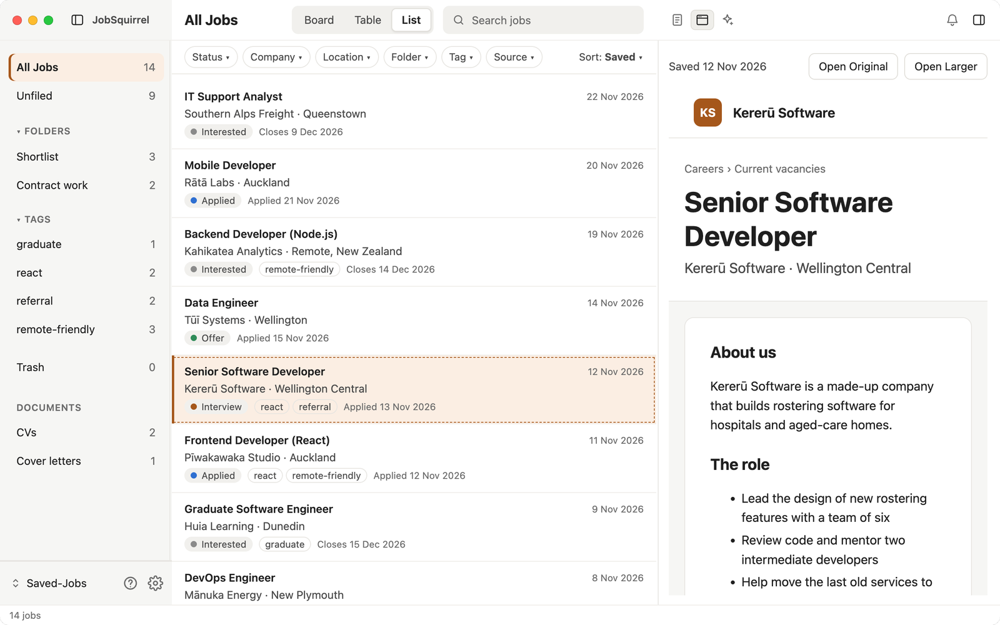
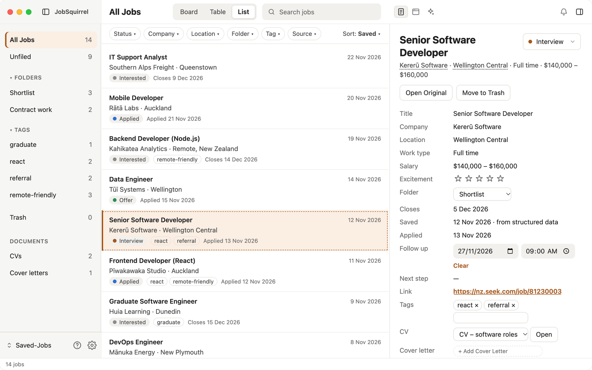
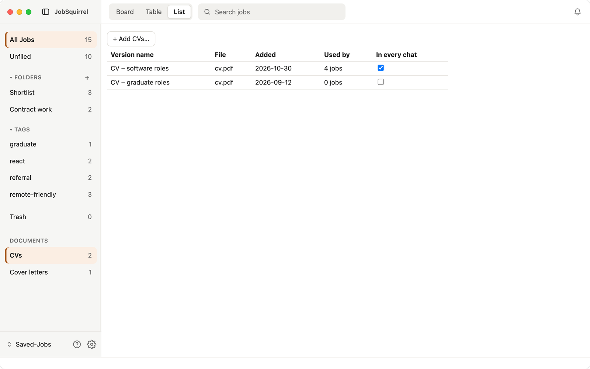
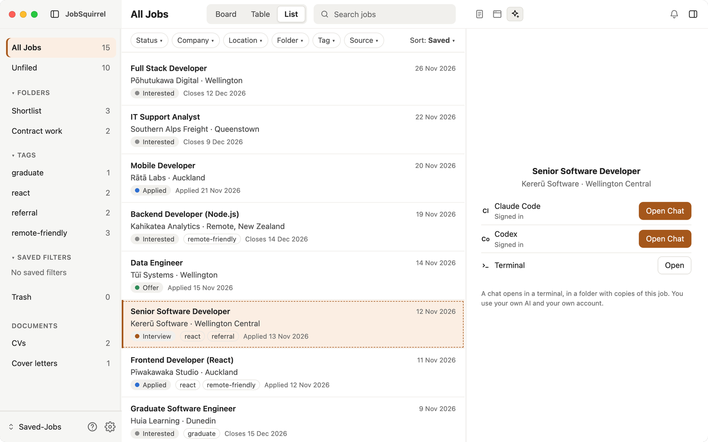
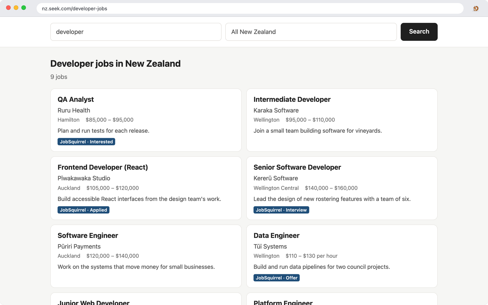
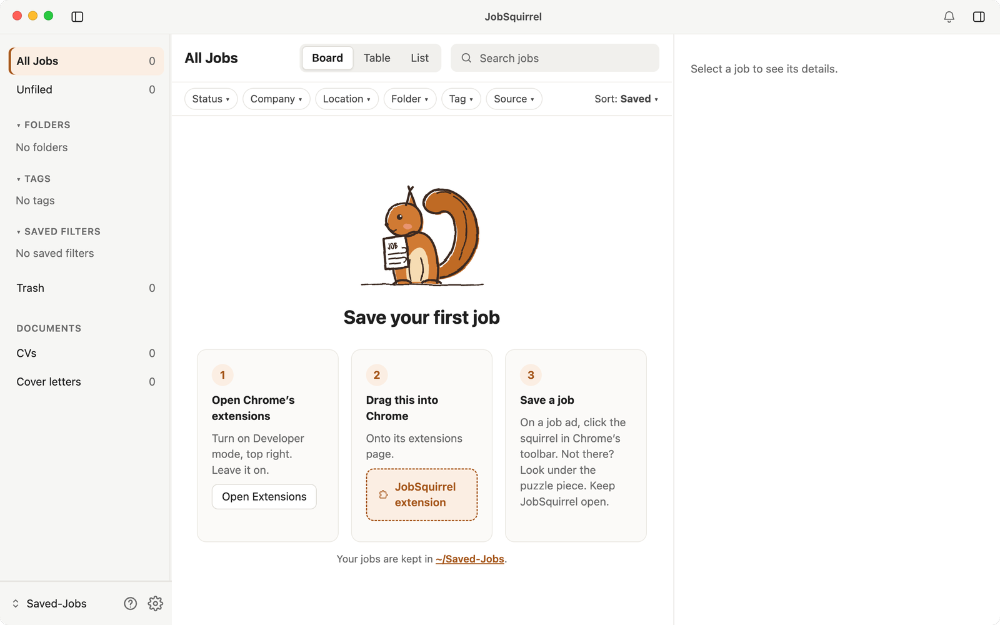

Your personal all-in-one job hunting dashboard.
A free app that saves any job ad with one click, then keeps every application, deadline, interview and CV on one screen.
The Chrome extension
Saves a job ad into the app with one click.
Download the extensionHow to add it. The app shows you too.
You need both: the extension saves into the app.
Free · No account · macOS 14 or later · Windows 10 or 11 (if it warns you) · Linux (x64): .deb for Ubuntu, Debian and Mint, AppImage for others (which one?)





Sound familiar?
The ad is gone before your interview.
You keep your own copy of it.
“Which CV did I send them?”
It’s right there, with the job.
You missed the closing date.
You get a reminder first.
A spreadsheet you stopped updating.
A board. Drag a card, done.
Meet JobSquirrel.
From the ad you spot to the offer you sign.
Save with a click.
Spotted a role on Seek, LinkedIn or Trade Me Jobs? Click the squirrel in Chrome’s toolbar. JobSquirrel fills in the title, company, pay, location and closing date, and keeps a full copy of the ad.
- Seek, LinkedIn, Indeed, Trade Me Jobs and any other job page
- Show in App takes you straight to it
- Saved it before? The squirrel says so

Keep every ad.
Ads come down when the job closes, often just before your interview. Your copy stays, as the ad looked, and opens without the internet.
- The whole ad: the role, what they want, how to apply
- Open Original when the live ad is still there
Track every application.
Drag a card from Applied to Interview, and the job follows. Use the Board, a Table or a List, whichever suits you.
- Status, applied date, follow-up and next step
- Interview notes, stars for how keen you are, fields of your own
- Folders and tags for each job hunt

Find any job in seconds.
Search everything you saved, then narrow it down by status, company, location, folder, tag or site. Keep the filters you use often in the sidebar.
- Finds jobs by title, company, place, tag or folder
- Saved filters, one click away

Know which CV you sent.
Keep each version of your CV and cover letter in one place, and link it to the jobs you sent it with. When they call, you know exactly what they read.
- PDF and Word files, kept with your jobs
- See how many jobs used each version
Prepare with your own AI.
Ask for a cover letter, interview questions, or what the employer really wants. Claude Code or Codex opens inside JobSquirrel with a copy of the ad, your notes and your CV.
- Your own Claude or ChatGPT plan, signed in as you
- Use what it writes as this job’s cover letter, in one click
- JobSquirrel sells no AI and sends nothing itself
Never read an ad twice.
On Seek’s search results, the jobs you saved carry a label with their status.
- Turn it on in the extension’s settings
- Checked against your own library, on your computer

Also in the box
Reminders
Before a closing date, and on the day you planned to follow up.
Folders and tags
One folder for each hunt, tags for everything else.
Several libraries
Keep this year’s hunt apart from the last one.
Back up in one go
Export Backup… puts everything in one zip file.
A Trash
Deleted by mistake? Restore it.
One-click updates
When a new version is out, a card shows what is new. Click Update.
Light and dark
Follows your computer’s setting.
Keyboard shortcuts
For people who never touch the mouse. See them
Add it to Chrome: one drag
The Chrome extension is one file. Download it and drag it in.
Open Chrome’s extensions
Click ⋮ (top right) → Extensions → Manage Extensions. Turn on Developer mode, top right, and leave it on.
Drag it in
Drag the downloaded file from your Downloads folder onto that page. No need to unzip.
Click the squirrel
It is in Chrome’s toolbar. Not there? Look under the puzzle piece.

Works where you look
Seek LinkedIn Indeed Trade Me Jobs SEEK Grad Prosple Student Job Search SEEK Volunteer Hays Education Gazette
Any other job page works too: you get the full copy, and fill in what it doesn’t say.
From “ooh” to “I got it!”
Interested
Ooh, this one looks good.
Applied
Off it goes. Fingers crossed.
Interview
Tie on. Deep breaths.
Offer
Party time!
Rejected
Plenty more acorns.
Rest easy.
Your job hunt is your business. It stays on your computer: we can’t see it, and we don’t want to.
On your computer
Your jobs are plain files in a folder you choose. No cloud.
No account, no tracking
Nothing to sign up for. No ads, no analytics.
Nothing about you is sent
The extension reads a job ad only when you click it. JobSquirrel only asks GitHub for new versions, and you can turn that off.
Ready to try JobSquirrel?
It’s free, and in beta. Something broken, confusing or missing? Tell us, and a person reads it.
The Chrome extension
Saves a job ad into the app with one click.
Download the extensionHow to add it. The app shows you too.
You need both: the extension saves into the app.
Linux (x64): .deb for Ubuntu, Debian and Mint, AppImage for others (which one?)
Questions
What do I need?
Two downloads: the JobSquirrel app and its Chrome extension. The app runs on a Mac with macOS 14 or later, a 64-bit PC with Windows 10 or 11, or a 64-bit Intel or AMD PC with Linux. And Google Chrome; on Linux, from google.com/chrome, not a Snap or Flatpak.
Windows warns me about the download
The Windows version is not signed yet. Click More info, then Run anyway. If there is no Run anyway, it can’t be installed on that PC yet. Download it only from this website or our download page.
Linux: the .deb or the AppImage?
On Ubuntu, Debian and Linux Mint, use the .deb. On Ubuntu 24.04 and later, JobSquirrel won’t run from the AppImage, because Ubuntu doesn’t give it the security sandbox JobSquirrel needs. On other Linux, use the AppImage. How to install
Can an AI help me with an application?
Yes, the one you already pay for. Right-click a job and choose Chat About This Job: Claude Code or Codex opens with a copy of the ad, your notes and your CV, signed in as you. More in Chat with your AI.
The extension says JobSquirrel isn’t running
Open the JobSquirrel app, then click Try Again. More in Something wrong?